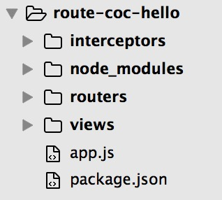

开始使用
建立项目目录并安装
take route-coc-hello # 创建目录并进入 npm init # 初始化一个工程 npm install route-coc --save # 安装route-coc并保存route-coc是基于express.js构建的，并且添加了express.js依赖，所以不需要另外单独安装express.js。
建立约定的相关配置目录：routers、interceptors、views，创建启动文件app.js, 之后目录如下图所示：

在app.js中添加如下代码
const express = require('express'); const coc = require('route-coc'); const log = require('t-log'); const app = express(); const stage = coc(app); const port = 8080; app.listen(port, () => { const startInfo = `server run at http:\/\/localhost:${port}`; log.info(startInfo); });运行node app.js。
即可启动一个暂无任何路由配置的server。
当然暂无任何功能。添加view和router配置。
在routers目录下建立hello.js, views目录下建立hello.swig。
hello.js写入以下路由配置：
module.exports = { '/hello, /hello/:name': { 'get': { handle(data, req) { return { 'username': req.param.name }; }, view: 'hello' } } };hello.swig写入以下内容：
``` <!DOCTYPE html>
hello page - route-coc Hi, this is a hello page with route-coc.
</body> </html> ```
- OK! 再次启动app: node app.js，分别访问：
http://localhost:8080/hello
http://localhost:8080/hello/lily
看看页面呈现吧。
注：
- route-coc本质是express的middleware实现，因此express本身的各种API也可以使用。